Was ist Strom und welche Begriffe muss ich kennen?
Was bedeuten konkret Spannung, Stromstärke und Widerstand?
Welche mathematischen Grundformeln muss ich kennen?
Mit welchen Regeln können einfache Hardwareschaltungen analysiert werden?
Hardwareschaltungen mit Strom versorgen
Was genau ist der „Strom aus der Steckdose“?
Was für einen Strom benötigt mein Microcontroller?
Welche Möglichkeiten der Stromversorgung gibt es generell?
Wie lange hält die Batterie bzw. der Akku?
Was kostet der jährliche Stromverbrauch?
Signale verarbeiten und erzeugen
Wie kommuniziert ein Microcontroller mit der Außenwelt?
Welche Arten der Signalübertragung gibt es?
Welche Signalarten kann mein Microcontroller verarbeiten?
Wie werden Sensoren/Aktoren mit dem Microcontroller verbunden?
Wie viel Strom kann mein Microcontroller-Board bereitstellen?
Wie lassen sich Schäden an Microcontroller und Bauteilen vermeiden?
Wie lassen sich inkompatible Logikpegel anpassen?
Wie können starke Lastströme geschaltet werden?
Physikalische Grundlagen
Eine einfache Definition des elektrischen Stroms kennen und verstehen
Die Begriffe „Spannung“, „Stromstärke“ und „Widerstand“' erklären
Das Ohmsche Gesetz anwenden können, um mit diesen Begriffen zu rechnen
Die Kirchhoffschen Regeln kennen, um einfache Schaltungen zu analysieren
Praktische Anwendungen von Spannungs- und Stromteilern nachvollziehen können
Hardwareschaltungen mit Strom versorgen
Die Unterschiede zwischen „Gleichstrom“ und „Wechselstrom“ kennen
Die Anforderungen typischer Microcontroller an die Stromversorgung kennen
Die Funktionsweise eines einfachen USB-Trafonetzteils verstehen
Verschiedene Arten der Stromversorgung planen und einsetzen können
Die Lebensdauer einer Batterie/Akku abschätzen können
Den Verbrauch und die erwarteten Stromkosten berechnen können
Signale verarbeiten und erzeugen
Die gängigen Schnittstellen eingebetteter Systeme erklären können
Analoge und digitale Sensoren und Aktoren verbinden können
Sensoren und Aktoren mit Active-High und Active-Low-Logik verbinden können
Stromstärken und Spannungen für den Microcontroller anpassen
Die Hardwareschnittstellen grundlegend programmieren können
🏁
Aufgabe 1: Ein kleines Hardware-Quiz
Arten von Hardwarebausteinen
Integrierte SchaltkreiseHalbgeschlossene StromkreiseVorgefertigte BaugruppenSelbstgebaute TrägerplatinenElementare BauteileHalbleiterelementeIsolierende MaterialienModular kombinierbare GeräteWahrFalschWahrFalschWahrFalsch
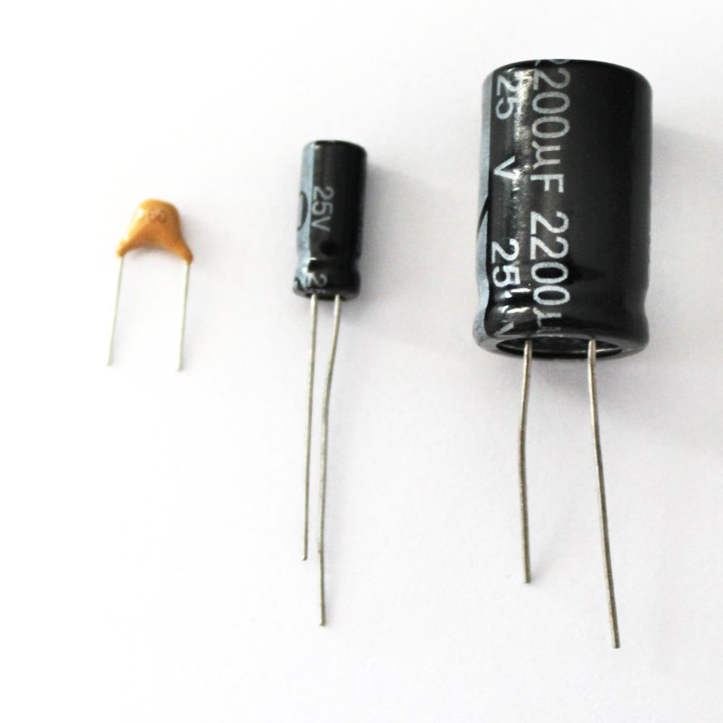
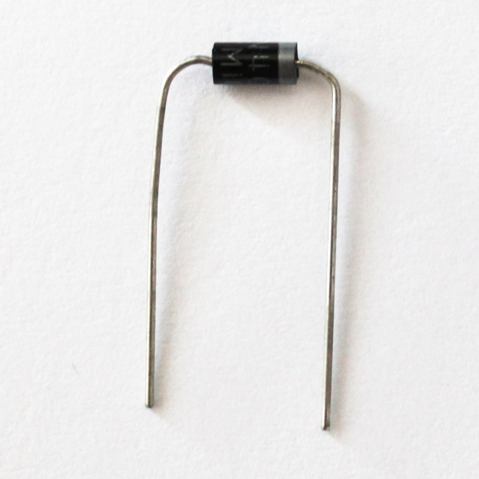
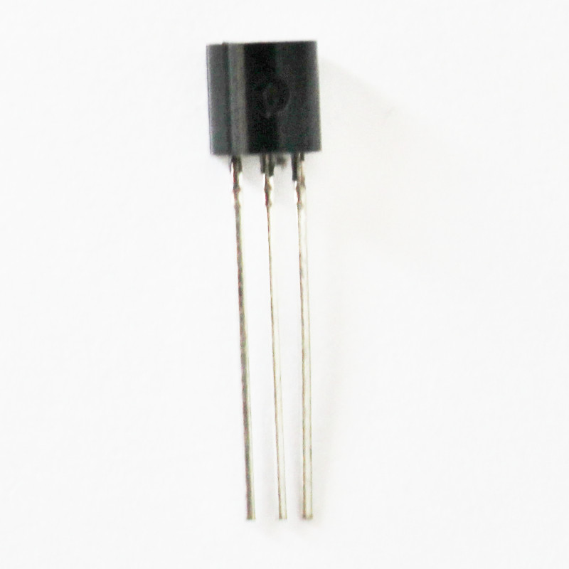
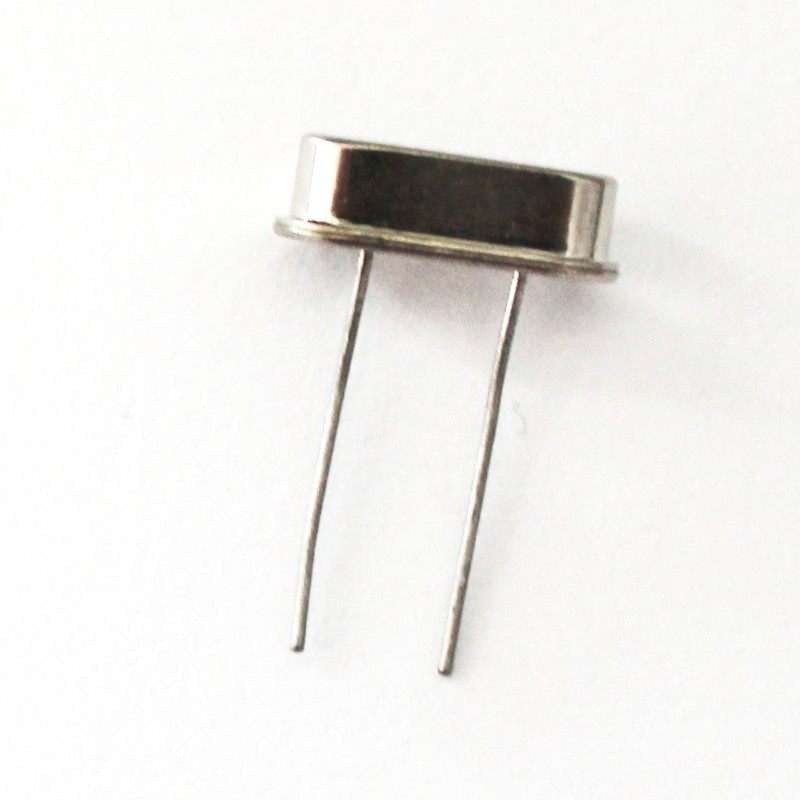
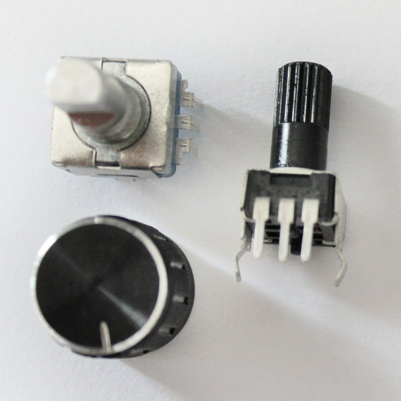
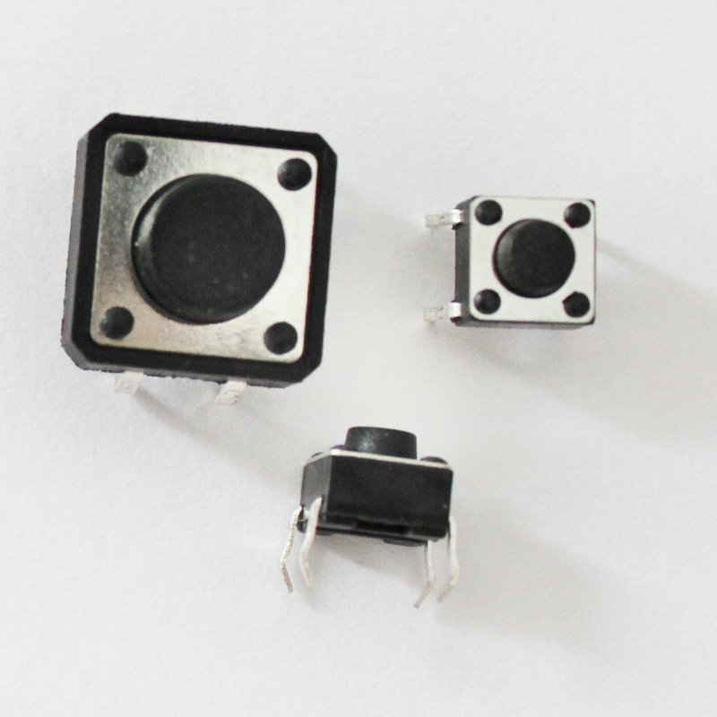
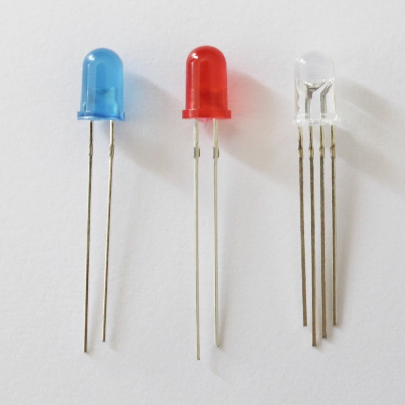
Es werden weniger Bauteile als bei der Verwendung anderer Bauteile benötigt.Die Schaltung kann exakt an die eigenen Bedürfnisse angepasst werden.Zumindest bei einfachen Schaltungen fallen häufig geringere Materialkosten an.Der Platzbedarf der Schaltung ist in etwa dergleiche wie bei anderen Bauteilen.Der Stromverbrauch der Schaltung kann wesentlich einfacher kalkuliert und geplant werden.Man hat einen soliden Grundstock gängiger Sensoren und Bauteile zur Verfügung.Die Kosten sind geringer als beim Einzelkauf der für eine Schaltung benötigten Bauteile.Die Bauteile können in der Regel einfacher mit einem Microcontroller verbunden werden.Das Sensor Kit kommt mit einer guten Dokumentation einschließlich vieler Beispiele.Das Sensor Kit enthält auch eher unübliche Bauteile, die einzeln schwer zu beschaffen sind.
Hardwareschnittstellen des Arduino Uno
Analoge SpannungsverläufeBinäre SpannungenGround / Masse12 V Gleichstrom240 V WechselstromSerielle DatensignalePulsweitenmodulierte Signale1,8 V2,4 V3,3 V5,0 V9,0 VWahrFalschKeine Funktion (nicht verbunden)Den Arduino Uno mit Strom versorgenExterne Bauteile mit Strom versorgenAnaloge Signale empfangenAnaloge Signale erzeugenBinäre signale empfangenBinäre signale erzeugenPWM-Signale empfangenPWM-Signale erzeugenDie interne LED ansteuernSerielle Daten austauschen (ohne Bitbanging)
Hardwareschnittstellen des Raspberry Pi
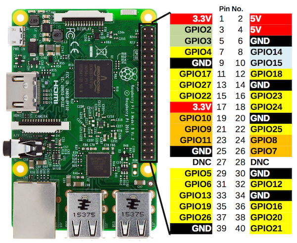
Analoge SpannungsverläufeBinäre SpannungenGround / Masse12 V Gleichstrom240 V WechselstromSerielle DatensignalePulsweitenmodulierte Signale1,8 V2,4 V3,3 V5,0 V9,0 VWahrFalschDen Raspberry Pi mit Strom versorgenExterne Bauteile mit Strom versorgenAnaloge Signale empfangenAnaloge Signale erzeugenBinäre signale empfangenBinäre signale erzeugenPWM-Signale empfangenPWM-Signale erzeugenSerielle Daten austauschen (ohne Bitbanging)
Keine, da dieser Satz für elektronische Systeme nicht zutrifft.Unordnung ist sehr viel wahrscheinlicher als Ordnung.Ein Schreibtisch oder Kinderzimmer wird zum Beispiel zwangsläufig immer unaufgeräumter.Man muss daher aktiv Energie aufwenden, um das System in einen „geordneten Zustand” zu bringen.Bezogen auf die Elektronik bedeutet das, dass Strom ohne äußere Einwirkung von alleine zu fließen beginnt.Bezogen auf die Elektronik bedeutet das, dass Strom stets durch Energietransfer von außen „erzeugt“ wird.NeutronenProtonenElektronenAtome mit einem ElektronenungleichgewichtBesonders schwere Atome mit sehr vielen ProtonenAtome ohne Neutronen im Inneren des AtomkernsLeiterHalbleiterIsolatoren
Durch äußere Einwirkung wird Energie auf die Elektronen eines Leiters übertragen, wodurch die
Elektronen zusätzlich angeregt werden, sich in einen geordneteren Zustand zu begeben, wodurch
wiederum der Strom fließen und die somit die Energie übertragen werden kann.
Die durch die Elektronen transportierte Energie „verrichtet Arbeit“, in dem die Energie innerhalb
der Bauteile einer Schaltung beispielsweise in Abwärme umgewandelt wird. Da die aufgeladene Energie
die Ursache für den Stromfluss ist, nimmt der Stromfluss hierdurch ab. Man kann sagen, die Schaltung
widersetzt sich dem Stromfluss und wirkt ihm entgegen.
Die Menge der zur Verfügung stehenden Energie richtet sich nicht nur nach der Energie, welche den
Elektronen aufgeladen wird, sondern in selbem Maße nach der Anzahl fließender Elektronen innerhalb
einer Zeiteinheit.
vom niedrigen zum hohen Potential.vom hohen zum niedrigen Potential.von einer Spannung nach Masse/Ground.entgegen der technischen Stromrichtung.vom niedrigen zum hohen Potential fließt.vom hohen zum niedrigen Potential fließt.ständig im Kreis fließt.WiderstandStromstärkeSpannungLeistungEnergieDie Formel beschreibt, wie viel Energie ein einzelnes Elektron trägt.Die Formel beschreibt, wie viele Elektronen die Stromquelle freisetzen kann.Die Formel beschreibt, wie viel Energie in einer Zeiteinheit übertragen wird.Die Formel beschreibt, wie viel Energie eine Schaltung verbraucht.Die Formel beschreibt, welche Spannung eine Stromquelle zur Verfügung stellt.Die Formel beschreibt, welchen Gesamtwiderstand eine Schaltung besitzt.Die Formel beschreibt, wie viele Elektronen in einer Zeiteinheit fließen.Die Formel beschreibt, wie viel Energie zum Verrichten einer Arbeit benötigt wird.KraftEnergieLeistungZeitMengeGewichtSpannungInduktivitätWiderstandLautstärkeGeschwindigkeitSpeicherplatzBeide drücken im Grunde genommen aus, wie viel Energie je Zeit übertragen wird.Die beiden Begriffe sind daher synonym und beschrieben dasselbe physikalische Phänomen.Leistung ist der allgemeinere Begriff, Stromstärke seine Anwendung in der Elektrodynamik.Die Leistung drückt daher ganz allgemein „Energie je Zeit“ aus.Die Stromstärke ersetzt hier „Energie“ durch „Elektronenladungenn“, weil diese die Energie übertragen.Da es sich um unterschiedliche Konzepte handelt, kann nicht vom einen zum anderen umgerechnet werden.Stromstärke = Elektronenladungen ÷ ZeitWeg = Geschwindigkeit ÷ ZeitLeistung = Energie ÷ ZeitWahr, weil die verwendeten Bauteile meistens sowieso hohe Toleranzen besitzen.Falsch, weil sich die Rundungsfehler aufaddieren und das Gesamtergebniss deutlich verschlechtern.StromnetzBatterieAkkuUSB-NetzeilWahrFalschWahrFalschDer Strom wechselt in unregelmäßigen Abstände seine Stromstärke.Der Strom wechselt in periodischen Abständen seine Flußrichtung.Die Spannung pendelt um eine Referenzspannung, die als 0 V angegeben wird.Der Kunde wechselt öfters zu einem günstigeren Stromanbieter.Vom Gesamtwiderstand der dazwischen liegenden BauteileVom Innenwiderstand der Stromquelle und vom LeitungswiderstandVon der Energieeffizienzklasse der verwendeten StromquelleUm die entnommene Stromstärke zu begrenzen, wenn das Bauteil ein Signal vom Micrcontroller empfängt.Um den Gesamtwiderstand der Schaltung zu vermindern und somit mehr Strom zu erhalten.Um den nach Masse abfließenden Strom im Falle eines Fehlers zu begrenzen, wenn das Bauteil ein Signal erzeugt.Um durch Herabsetzung der Spannung durch einen Widerstand inkompatible Logikpegel anzugleichen.Bei nicht-linearen Bauteilen zeigt die Spannung ein exponentielles Wachstum im zeitlichen Verlauf.Lineare Bauteile werden zur Senkung des Stromverbrauchs genutzt, da sie effektiver arbeiten.Bei linearen Bauteilen steht ihr Widerstand in linearem Zusammenhang zur angelegten Spannung.Bei nicht-linearen Bauteilen existiert ein komplexerer Zusammenhang zwischen Widerstand und Spannung.Die Summe aller Widerstände in einem Stromkreis muss immer 0 Ω ergeben.Die Summe aller Ströme in einem Stromkreis muss immer 0 A ergeben.Die Summe aller Spannungen in einem Stromkreis muss immer 0 V ergeben.Die von der Stromquelle bereitgestellte Spannung fällt bei Masse/Ground immer auf 0 V ab..An den einzelnen Bauteilen fallen Teilspannungen ab, die sich zur Ursprungsspannung aufaddieren.Die Spannung entlang eines Bauteils (gemessen an seinen beiden Kontakten) ist für alle Bauteile gleich.In einem linearen Widerstandsnetz ist die Summe aller eingehenden Spannungen gleich der Summe aller ausgehenden Spannungen.In einem linearen Widerstandsnetz ist die Summe aller eingehenden Stromstärken gleich der Summe aller ausgehenden Stromstärken.In einem linearen Widerstandsnetz geht die Summe aller Widerstände gegen Unendlich.
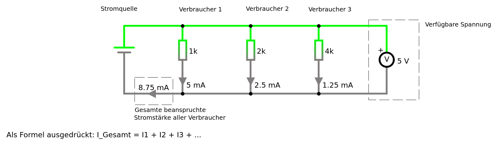
Mehrere in Reihe geschaltete Verbraucher erhöhen den Stromverbrauch einer Schaltung.Mehrere parallel geschaltete Verbraucher erhöhen den Stromverbrauch einer Schaltung.Die zur Verfügung stehende Spannung reduziert sich mit jedem weiteren Verbraucher.Da die Verbraucher zusammen mit dem Innenwiderstand der Stromquelle einen Spannungsteiler bilden.Weil mehr Verbraucher mehr Strom ziehen, dessen Spannung am kombinierten Gesamtwiderstand abfallen muss.Weil die Stromquelle nur eine begrenzte Höchstspannung zur Verfügung stellen kann.
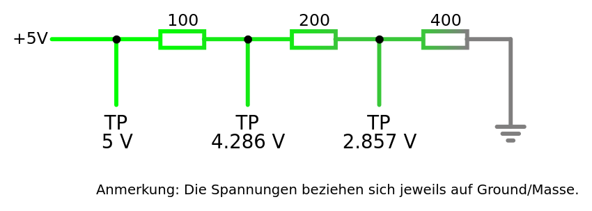
StromteilerStromverteilerSpannungsteilerLangeweiler
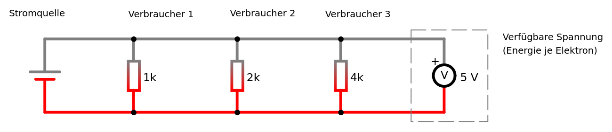
StromteilerSpannungsteilerWiderstandStromstärkeSpannungWiderstandStromstärkeSpannung
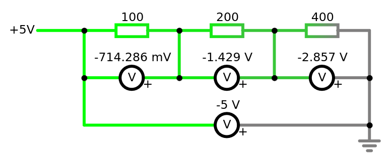
Ungenutzten Strom in einer SchaltungÜberschüssige Spannung, die bei Masse/Ground verworfen wirdDie Teilspannung entlang eines oder mehrerer Bauteile
∑ Spannungsabfall = V
Aufgabe 3: Frei nach Adam Riese
VoltAmpereOhmWattJoulekW/hkm/hAhm/sdb(Leistung ÷ 1000) × Stunden × Strompreis(Spannung ÷ Widerstand) × 1000 × Stunden × Strompreis((Spannung ÷ Stromstärke) ÷) 1000 × Stunden × Strompreis((Spannung × Stromstärke) ÷ 1000) × Stunden × Strompreis
c) Ein USB-Netzteil für den Raspberry Pi kann bis zu 9 Watt Leistung bereitstellen. Welche Stromkosten fallen
bei einem Strompreis 37 Cent je Killowattstunde an, wenn der Raspberry Pi zehn Wochen am Stück unter Vollast läuft?
Geben Sie nur das auf zwei Nachkommastellen gerundete Ergebnis in das Eingabefeld ein.
Stromkosten ≈ €
d) Ein auf Basis des Arduino Uno entwickeltes IoT-Device benötigt eine Spannung von 12 V und verbraucht
750 mA Strom. Welche Stromkosten fallen bei einem Strompreis 37 Cent je Killowattstunde an, wenn das Device
zwanzig Wochen am Stück läuft?
Geben Sie nur das auf zwei Nachkommastellen gerundete Ergebnis in das Eingabefeld ein.
Stromkosten ≈ €
VoltAmpereOhmWattJoulekW/hkm/hAhm/sdbNennladung × SpannungNennladung ÷ StromstärkeNennladung ÷ (Spannung ÷ Widerstand)Nennladung × Spannung × Widerstand
c) Ein Akkupack besitzt eine Spannung von 9 Volt und eine Nennladung von 5 Amperestunden. Wie lange kann
damit ein IoT-Device versorgt werden, das im Schnitt 750 Milliampere Strom verbraucht?
Geben Sie nur das auf zwei Nachkommastellen gerundete Ergebnis in das Eingabefeld ein.
Batterielaufzeit ≈ Stunden